More sophisticated machines are required for smart manufacturing and collaboration between humans and machines. The new Machine Automation Controller is designed to meet extreme machine control requirements in terms of motion control speed and accuracy, which will help further reduce machine cycle time and improve machine accuracy.
Building Automation
Industrial Automation
Power Automation & Safety


Bangladesh Distributor
NX701-[][][][]
NX-Series NX701 CPU Units
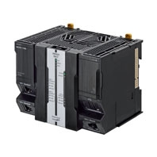
Ideal for large-scale, fast, and highly-accurate control with up to 256 axes.
about this Product Family
Related Contents
- Automation Systems
- Machine Automation Controllers
- Features
- Lineup
- Specifications
- Dimensions
- Catalog
last update: October 03, 2016
Motion control
Goes beyond machine control concepts
Basic instructions 0.37 ns 【Industry's fastest】
Motion control 125 μs/8 axes 【Industry's fastest】
Architecture based on Intel® CoreTM i7 processor significantly speeds up the execution of instructions (basic instructions 0.37 ns, math instructions for Long Real Data 3.2 ns). Command values to send to servomotors and stepper motors can be up updated as fast as every 125 μs. This enables smooth cam motion and high-precision interpolation and phase adjustment between axes.
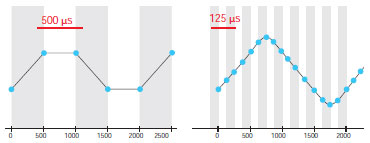
Complete integration of motion and logic
One controller integrates logic, motion, vision and information for complete control and management of machines. Position, displacement, and tension information collected from sensors can be quickly and easily fed back to the motion control.
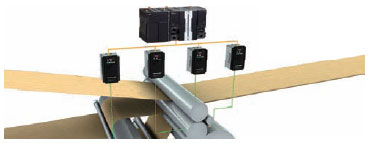
Accurate feedback control with less than 1 μs jitter
The NJ/NX controller offers synchronous control of all machine devices, from input through to output. Distributed clock-based clock synchronization incorporated into EtherCAT slaves enables the I/O refresh cycle to be synchronized between units such as the FH Vision System, ZW Displacement Sensor, NX I/O, and G5/1S Servo Drive.
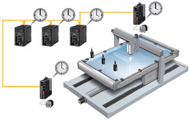
Simlicity for advanced applications
The Sysmac Library is a collection of software functional components that is packed with rich technical know-how on control programs: Rotary knife to cut a film at the marked position and vibration suppression for material handling. This helps create high-performance machines quickly and easily.
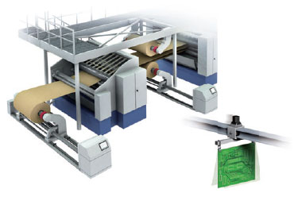
Large data processing
High-speed large data communications and processing in parallel with machine control
Today's manufacturers are under pressure to respond quickly to a wide variety of increasing new consumer needs and to achieve high-quality, zero-defect production. This pressure has prompted them to innovate their production sites by leveraging ICT developments. Featuring a large memory capacity, fast Ethernet connectivity, and multi-core processor, the NX7 allows data processing in parallel with machine control.
Memory capacity 260 MB 【Largest in class】
Thanks to its large 260 MB memory, the NX7 has sufficient capacity to store increasing data for changeovers and collect large amounts of inspection results and trace data for productivity and quality improvements.
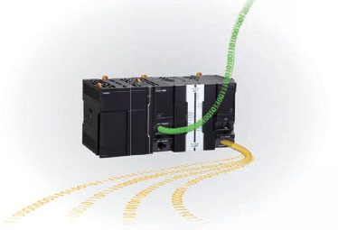
Parallel processing using multi-core processor
The Intel® CoreTM i7 quad-core processor allows high-speed large data communications and processing in parallel with machine control, without compromising machine performance. It is also possible to add data processing in order to improve production processes.
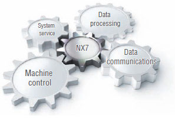
Ethernet 1Gbps x2 【Industry's fastest】
The NX7 provides two 1 Gbps Ethernet ports and FTP capability to send and receive a large amount of data from/to the host device. The built-in EtherNet/IP port can be used for tag data links or CIP message communications at up to 40,000 pps.
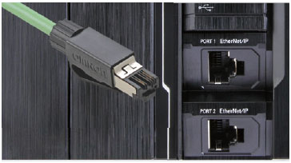
Note. Based on Omron investigation in March 2015.
Large scale
Powerful enough to control large production line
Controlling up to 256 synchronized axes, the NX7 simplifies building a large production line.
Up to 256 synchronized axes
The high-performance NX7 offers synchronous control of all devices on a production line, which previously required multiple controllers. This eliminates the need to implement the synchronization between controllers.
Performance improvement
One controller means that interlocks and synchronization between controllers are not required, which will result in an increase in performance of the production line.
Simple connection of up to 512 nodes
Up to 512 nodes can be daisy-chained over the EtherCAT network, which helps reduce production line set-up times.
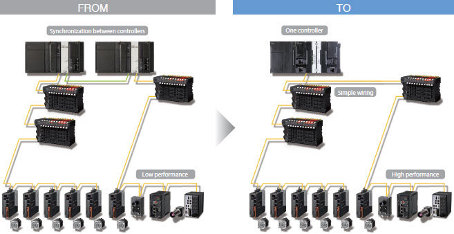
Preventive maintenance
Integrated system for stable operation
Logic, motion, and networking as well as vision, information, safety, and visualization are fully integrated within the Sysmac automation platform. These integrated devices are combined to provide functionality to ensure stable operation of machines and production lines.
Preventive maintenance of EtherCAT sensor
Monitoring the sensor status allows you to maintain before sensors malfunction due to dirt or aged deterioration.* The sensor settings can be saved and loaded, which minimizes downtime when troubles occur.
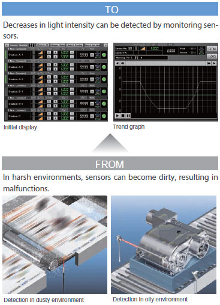
Preventive maintenance of actuator devices
The NJ/NX controller that integrates EtherCAT and motion control can constantly monitor actuator devices with a fast cycle time.
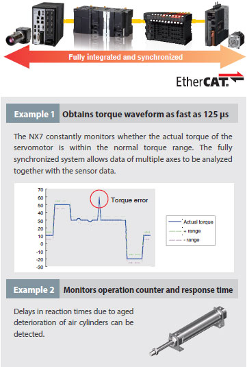
* When combining the NJ/NX controller with the E3NW EtherCAT Sensor communications unit and creating the programmable terminal screens.
The sample program for Omron NS/NA Programmable Terminal is available. Contact your Omron sales representative for details.
last update: October 03, 2016